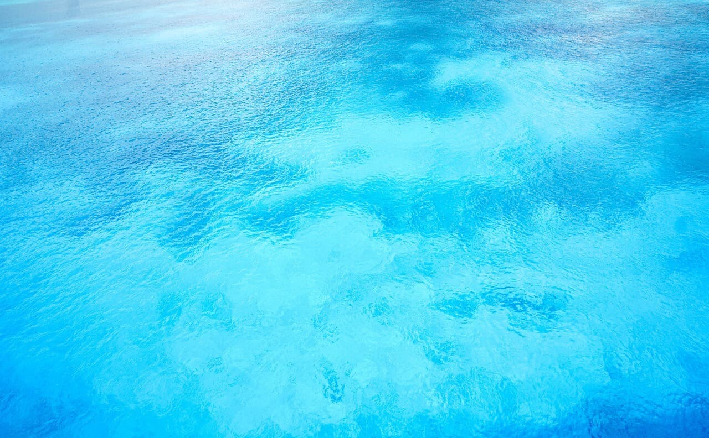

Com o aumento da conscientização sobre a escassez de recursos hídricos e a importância de preservar o meio ambiente, o gerenciamento eficiente dos gastos de água tornou-se uma prioridade global .
A água é um recurso vital para todas as formas de vida e desempenha um papel crucial em diversas atividades humanas, no entanto, a disponibilidade de água doce está se tornando cada vez mais limitada, devido ao crescimento populacional, às mudanças climáticas e à degradação ambiental, portanto, é fundamental adotar medidas para gerenciar efetivamente nossos gastos de água, a fim de preservar esse recurso valioso para as gerações futuras.
A conscientização sobre a importância da economia de água é o primeiro passo para a mudança de comportamento, incentivar a educação ambiental nas escolas, promover campanhas de sensibilização e fornecer informações claras sobre práticas sustentáveis de uso da água são estratégias eficazes para engajar a sociedade nesse processo.
Pequenas ações no dia a dia podem fazer uma grande diferença no consumo de água em nossas casas, instalar dispositivos economizadores, como torneiras com aeradores e chuveiros com controle de vazão, pode reduzir significativamente o volume de água utilizado, além disso, consertar vazamentos e reutilizar água para atividades como irrigação de jardins são medidas simples, porém impactantes.
A agricultura é um dos setores que consome a maior quantidade de água no mundo, práticas agrícolas sustentáveis, como a utilização de sistemas de irrigação eficientes e o manejo adequado do solo, podem reduzir o consumo de água e minimizar o impacto ambiental, além disso, o incentivo ao cultivo de plantas adaptadas ao clima local e a utilização de métodos de agricultura de conservação são estratégias que contribuem para o uso responsável da água.
A indústria desempenha um papel fundamental na veconomia, mas também é uma grande consumidora de água, implementar práticas de produção mais limpas e eficientes, como o reúso de água em processos industriais, o monitoramento e controle de vazamentos, e a utilização de tecnologias mais avançadas, pode reduzir significativamente o consumo de água nas atividades industriais.
Restaurantes, hotéis e outros estabelecimentos comerciais podem adotar medidas para reduzir seu impacto no consumo de água, treinar funcionários para práticas de uso responsável da água, instalar equipamentos eficientes, como lavadoras de louças e máquinas de lavar roupas de alta eficiência, e reutilizar água sempre que possível são estratégias que podem fazer a diferença.
A adoção de práticas para o gerenciamento eficiente de água traz benefícios significativos, além de preservar um recurso essencial para a vida, essas ações também podem resultar em economia de custos, promover a sustentabilidade, melhorar a reputação das empresas e contribuir para a construção de um futuro mais sustentável para todos.
O gerenciamento eficiente dos gastos de água é uma questão urgente e crucial em todo o mundo, ao adotar ações práticas e sustentáveis para reduzir o consumo de água, podemos contribuir para a preservação desse recurso valioso e transformar o mundo em um lugar mais sustentável para as gerações futuras, cada indivíduo, organização e setor desempenha um papel importante nessa jornada, e é fundamental agir agora para garantir um futuro com água suficiente para todos.